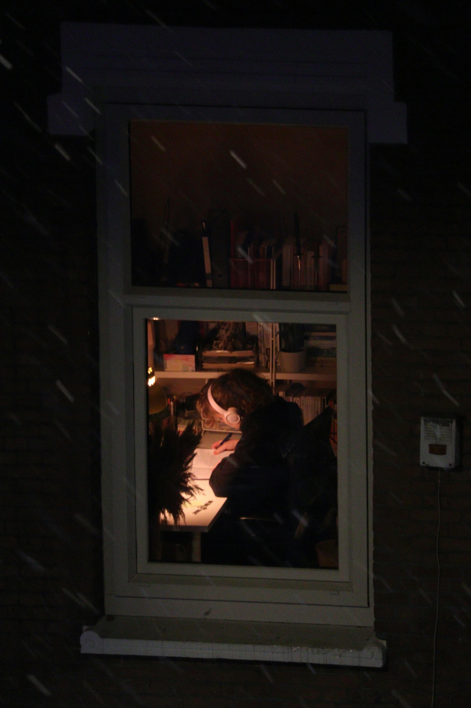
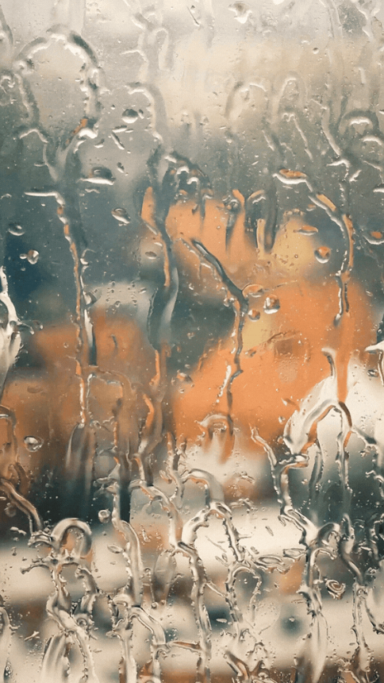
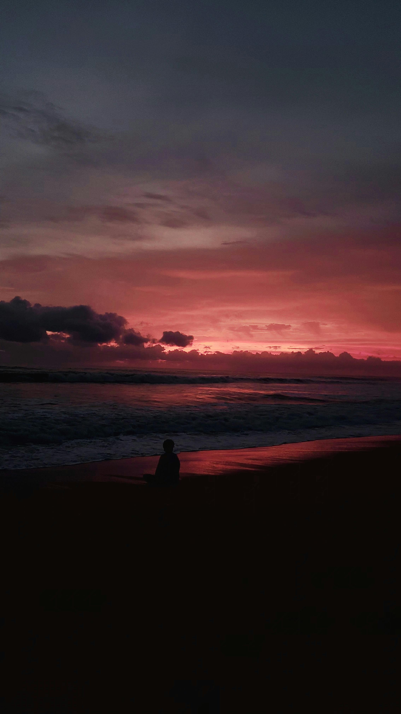

Late Nights is a visual story about the stress, exhaustion, and quiet emotions students experience while trying to finish homework late at night. Through warm dark tones, photography, and animation, this project captures the feeling of being awake while the rest of the world sleeps.
01
“It started like a normal night.”
I sat down at my desk thinking I would finish everything quickly. The room felt calm, the music played softly, and the night still felt peaceful.

02
“Hours passed while assignments kept piling up.”
The room became darker and quieter. Outside the window, the rain continued falling while I stayed focused on finishing my work.

03
“By midnight, the night felt endless.”
The only light left came from my screen and the city outside. Time moved slowly, and exhaustion slowly started taking over.

04
“When I finally finished, the sun was beginning to rise.”
Even though I was exhausted, there was relief in knowing the long night was finally over. The sunrise felt calm after hours of stress and silence.